COAD · RNA-seq: contagens brutas (GDC)
STAR - Counts (GENCODE v36) · gerado em 21/10/2026 20:31
37,7 Mtamanho mediano
0,42dispersão mediana α
16.630genes
458amostras tumorais
41amostras normais
0,0%valores faltantes
Fonte: API do GDC (STAR - Counts)
Principais resultados
- Bibliotecas de 1,5 a 81,8 milhões de leituras (mediana 37,7). 40.701 de 60.660 features têm leitura em pelo menos 10% das amostras.
- A variância cresce bem acima da média: a dispersão mediana da binomial negativa é α=0.42 (para features com média > 10). Isso descarta um modelo Poisson e indica binomial negativa (ou Poisson-lognormal) na verossimilhança.
- A fração de zeros é compatível com a binomial negativa (diferença mediana -0,8%); inflação de zeros não parece necessária.
- Em média 9,7% das leituras de cada amostra vão para as 20 features mais abundantes (MT-CO1, MT-ND4, MT-CO2).
- Genes codificadores de proteína recebem 97,2% das leituras (mediana).
- 16.630 genes medidos em 499 amostras (458 tumorais e 41 normais); 0,0% dos valores estão faltando.
- Os dois primeiros componentes principais explicam 17,4% e 10,1% da variância das features mais variáveis.
- Correlação mediana entre amostras: 0,63.
- Amostras com correlação muito abaixo das demais (possíveis outliers técnicos): TCGA-AA-3695-01.
- Tumor x normal: 13888 genes diferentes com FDR < 5% (8319 maiores no tumor, 5569 maiores no normal; 41 pacientes têm o par tumor-normal).
- Mais aumentados no tumor: ENSG00000164283.13, ENSG00000159263.16, ENSG00000060718.22, ENSG00000245694.10, ENSG00000115507.10, ENSG00000101115.13, ENSG00000170373.8, ENSG00000178773.15.
- Mais reduzidos no tumor: ENSG00000103544.15, ENSG00000082397.17, ENSG00000185432.12, ENSG00000198121.13, ENSG00000073711.11, ENSG00000169860.7, ENSG00000168079.17, ENSG00000153823.19.
- Associações clínicas com p < 0,05 nos componentes principais: PC2 com estádio (p=0.0014); PC2 com idade (p=0.0014).
Biblioteca
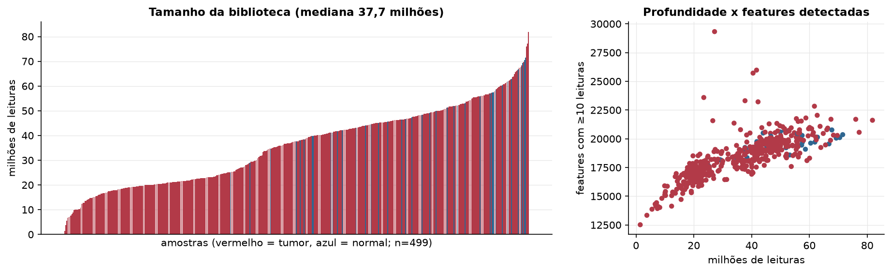
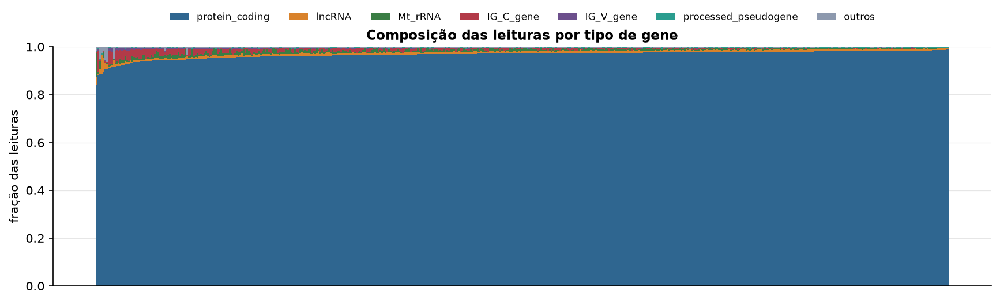
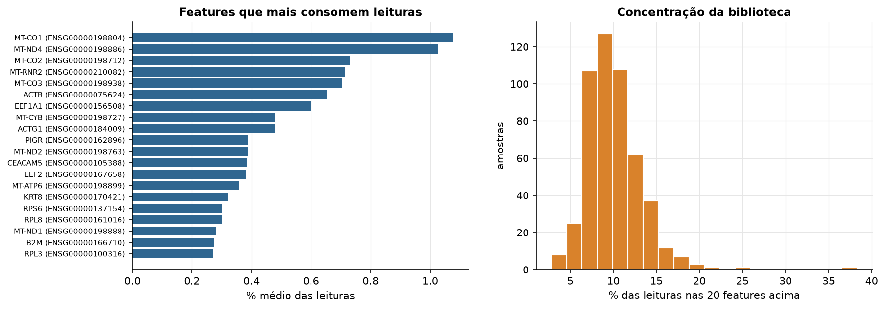
Sobredispersão e zeros
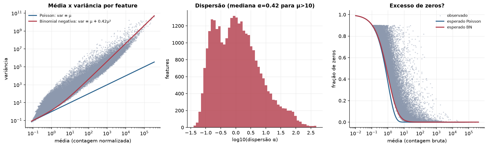
Exploração em log2(CPM+1)
Features com CPM ≥ 1 em pelo menos 20% das amostras (16.630 features).
Distribuição dos valores
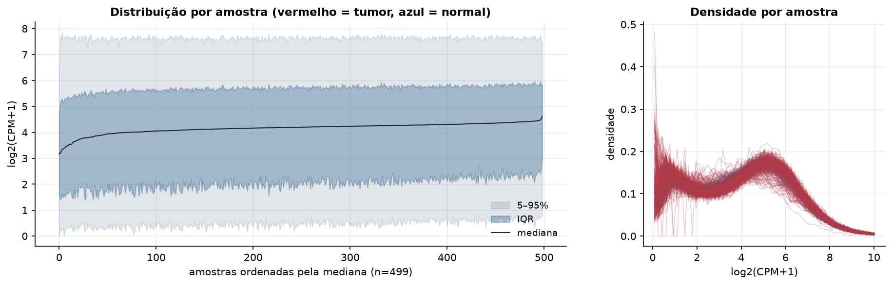
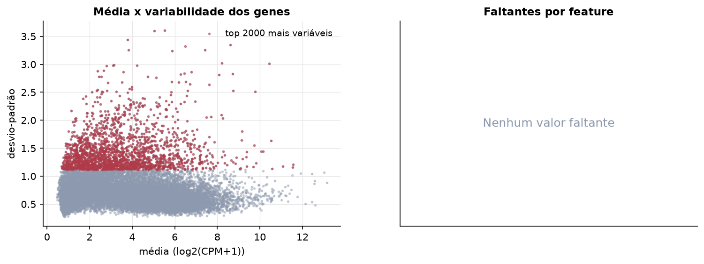
Estrutura das amostras
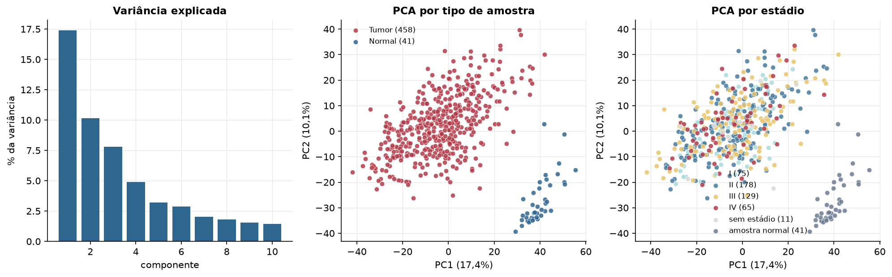
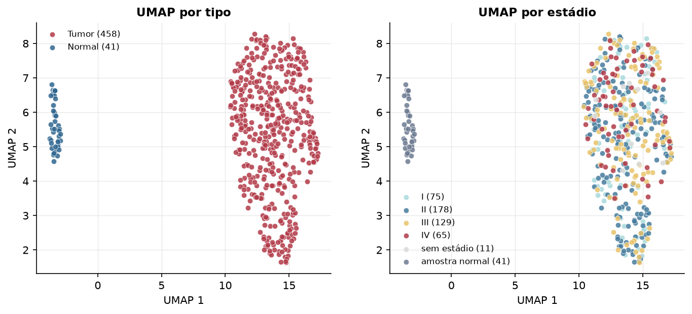
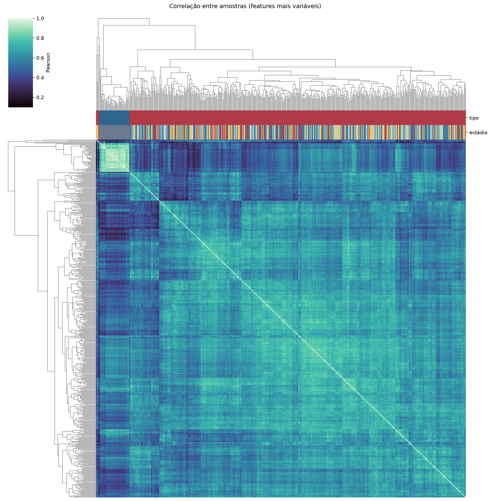
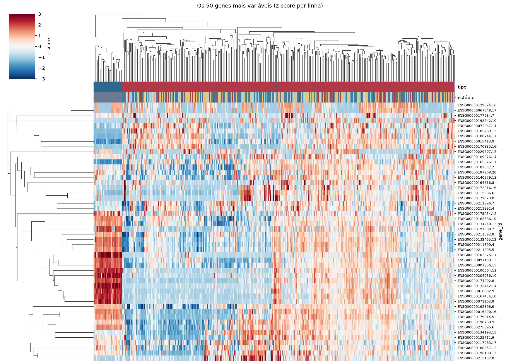
Tumor x normal
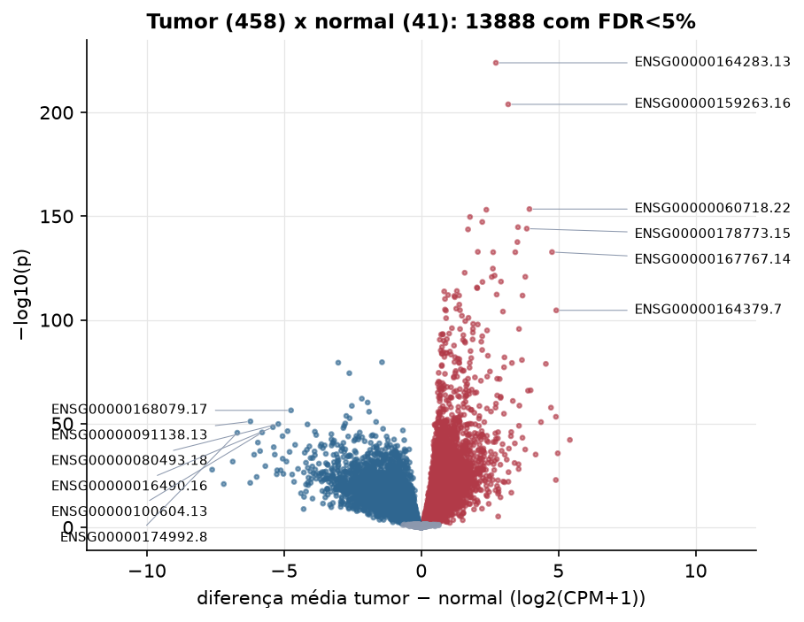
Features mais diferentes entre tumor e normal
| gene_id | diferenca_tumor_menos_normal | t | p | fdr |
|---|---|---|---|---|
| ENSG00000164283.13 | 2.72 | 61.703 | 1.21e-224 | 2.01e-220 |
| ENSG00000159263.16 | 3.169 | 54.247 | 1.26e-204 | 1.05e-200 |
| ENSG00000060718.22 | 3.943 | 42.166 | 3.78e-154 | 2.1e-150 |
| ENSG00000245694.10 | 2.372 | 39.543 | 8.16e-154 | 3.39e-150 |
| ENSG00000115507.10 | 1.777 | 38.37 | 2.35e-150 | 7.81e-147 |
| ENSG00000101115.13 | 2.224 | 38.501 | 6.41e-148 | 1.78e-144 |
| ENSG00000170373.8 | 3.526 | 37.349 | 2.06e-145 | 4.9e-142 |
| ENSG00000178773.15 | 3.846 | 46.398 | 1.03e-144 | 2.14e-141 |
| ENSG00000181418.8 | 1.705 | 38.309 | 2.41e-144 | 4.46e-141 |
| ENSG00000214039.9 | 3.504 | 36.426 | 3.22e-138 | 5.35e-135 |
| ENSG00000105219.10 | 2.062 | 34.467 | 1.6e-133 | 2.42e-130 |
| ENSG00000167767.14 | 4.767 | 69.022 | 2.03e-133 | 2.81e-130 |
| ENSG00000123500.10 | 3.428 | 34.754 | 2.36e-133 | 2.84e-130 |
| ENSG00000236081.1 | 2.622 | 39.868 | 2.39e-133 | 2.84e-130 |
| ENSG00000137868.19 | 2.611 | 33.011 | 1.92e-125 | 2.13e-122 |
| ENSG00000254560.6 | 1.584 | 32.159 | 1.92e-123 | 2e-120 |
| ENSG00000281406.2 | 2.674 | 40.949 | 4.52e-122 | 4.42e-119 |
| ENSG00000108244.17 | 3.792 | 31.718 | 1.75e-121 | 1.61e-118 |
| ENSG00000172031.7 | 2.571 | 42.602 | 2.06e-121 | 1.8e-118 |
| ENSG00000105989.10 | 2.907 | 46.719 | 3.58e-119 | 2.98e-116 |
| ENSG00000088836.14 | 2.231 | 32.967 | 5.32e-119 | 4.21e-116 |
| ENSG00000212993.5 | 2.03 | 30.768 | 2.28e-116 | 1.73e-113 |
| ENSG00000149243.16 | 2.042 | 33.668 | 5.27e-116 | 3.81e-113 |
| ENSG00000237686.7 | 1.299 | 32.987 | 1.21e-114 | 8.41e-112 |
| ENSG00000229970.3 | 0.838 | 30.178 | 1.94e-114 | 1.29e-111 |
| ENSG00000167755.15 | 2.75 | 30.518 | 6.08e-113 | 3.89e-110 |
| ENSG00000234602.9 | 0.978 | 32.39 | 1.04e-112 | 6.42e-110 |
| ENSG00000229404.6 | 1.38 | 29.997 | 1.78e-112 | 1.06e-109 |
| ENSG00000185269.12 | 3.692 | 30.225 | 1.91e-112 | 1.09e-109 |
| ENSG00000240204.3 | 1.209 | 29.715 | 2.83e-112 | 1.57e-109 |
Associação com variáveis clínicas
p-valores da associação dos três primeiros componentes principais (só tumores) com estádio (Kruskal-Wallis), sexo (Mann-Whitney), idade (Spearman) e sobrevida global (Cox univariado).
| estádio (Kruskal) | sexo (Mann-Whitney) | idade (Spearman) | sobrevida OS (Cox) | |
|---|---|---|---|---|
| PC1 (16,0%) | 0.562 | 0.251 | 0.699 | 0.269 |
| PC2 (8,7%) | 0.001 | 0.29 | 0.001 | 0.97 |
| PC3 (6,7%) | 0.176 | 0.612 | 0.266 | 0.165 |